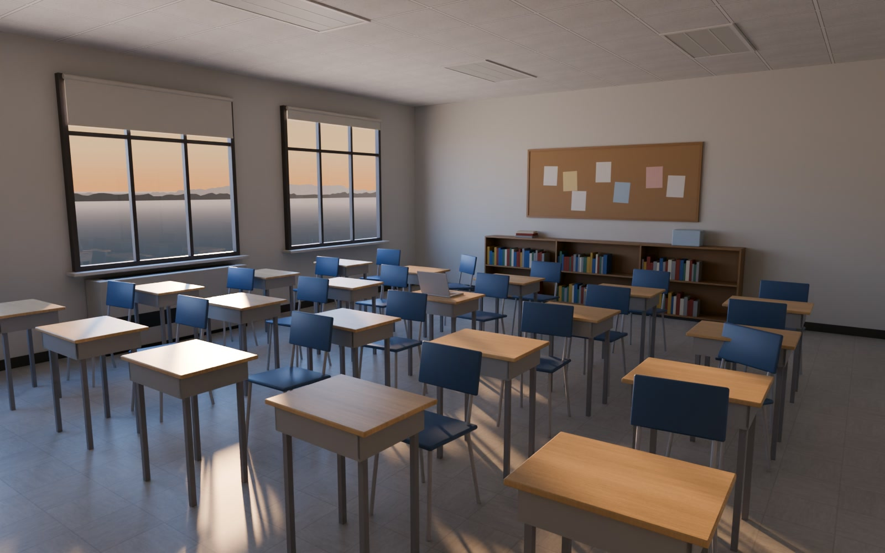

Echo Check+
How long does your classroom echo?
A free room echo check for classrooms. In about 2 minutes it estimates the echo time at one seat, compares it with the US classroom limit, and says who to ask next. If the claps are not clean enough, it gives no verdict. The audio never leaves this device.
Illustration: a box-shaped room of 30 × 25 × 10 ft (about 9 × 7.6 × 3 m) with the echo time you pick (0.45 s or 1.1 s). When it plays, it runs about 60 times slower than real time. It is a picture of the idea, not a measurement of any room.


0.45 s after the clap
One clap. The sound leaves the front of the room in every direction.
The room answers. Walls, floor and ceiling send it back, each bounce a little later and a little weaker.
The echo time is how long that takes to fade. The US classroom standard asks for 0.6 s or less in an empty, furnished classroom up to 10,000 cubic feet (0.7 s from 10,000 to 20,000).